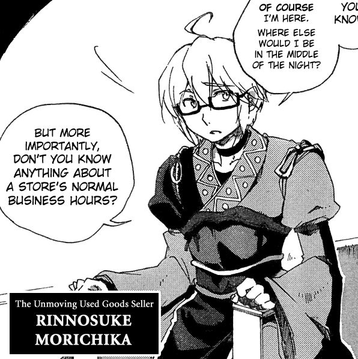
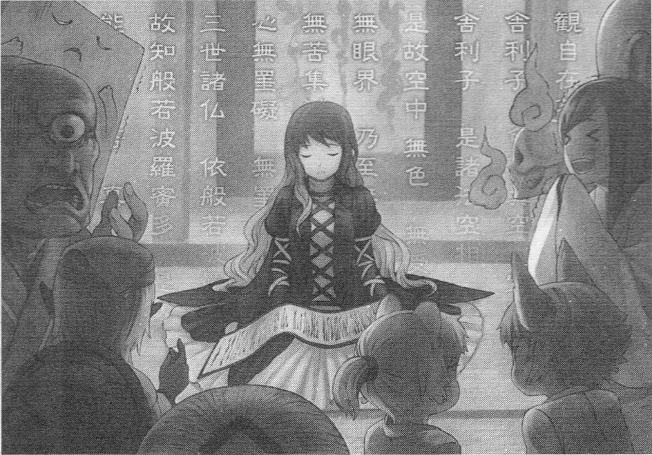
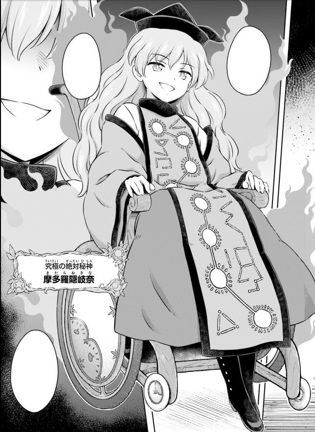
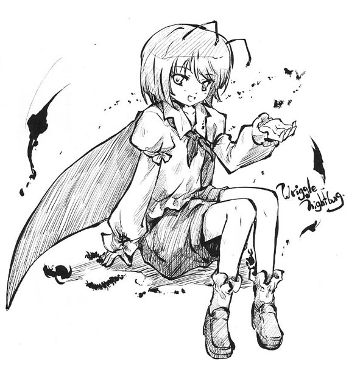

Representation
An All* Female Cast
As previously mentioned, the cast of the series is primarily female with very few male characters of much significance. This leads to an absence of gender roles, since without contrast there can be no roles assigned to a particular group. There can be no misogynystic remarks such as "you throw like a girl" when there is no "other" to discriminate against. All the protagonists are strong women, either being gifted with magic through species, or getting to that point through hard work. While there are males in the series, they're either non-humanoid or play supporting roles. ZUN has even briefly mentioned in the past that he was going to add a male character, but decided against it.
"I feel as if boys get in the way of the game. I'd like to make boy characters in another game as long as the game was completely unrelated to Touhou. Boys would just ruin the balance of the series."
- ZUN at a Q&A Panel in 2013

One of the very rare
notable males in the series.
Celebration of Religion
Something the series does that isn't typically seen in video games is celebration of different religions, mainly Asian religions. Most mediums focus on the most prominent religions, such as Christianity and Islam. Of course, part of the reason for the bigger focus on Asian culture is the setting, since the series does take place in a world that parallels Feudal Japan. In fact this is seen front and center with the main protagonist of the series, Reimu Hakurei, being a shrine maiden, and the Hakurei Shrine being a recurring location. This is the most prominent example of intersectionality, since Reimu's role as a shrine maiden is of great importance to the series. In fact, there was even a game in the series where the story revolved around the population falling into a state of despair, and members of the main religions, Buddhism, Taoism, and Shinto, saw this as an opportunity to gain influence by helping the people.
Character Highlights
Byakuren Hijiri
Byakuren Hijiri is a recurring character in the series. She's the head priest of the Myouren Temple, being of Buddhist faith. She's particularly noticeable as the game she was introduced in essentially built
a brand new set of characters for the purpose of fleshing out her backstory. Because of this, she has one of the more complex backstories in the series, being introduced as an important figure with many connections.
She was a nun who turned to magic, being afraid of death following the passing of her brother. She was trusted to exterminate youkai for the safety of humans, but rather than doing this she protected them as well. This initially
served her own desires, since her magic would disappear if they did too, but eventually she learned of their struggles and started sympathetizing with them. This led to youkai trusting her more, but the humans felt betrayed, ostracizing her in the long run.
She was sealed away for many years, but eventually wound up being freed by the youkai she once helped.
Buddhism is at the core of her character, and because of her significance to the world-building in the series, Buddhism has become an important part of the world of Gensokyo. Besides her older followers, she typically
tries to recruit characters to join her temple. It is worth noting that these interactions are sometimes played off as jokes, but they still build her character by keeping her interacting with the world, rather than becoming
a stagnant character after her story arc has ended.

Byakuren Hijiri
Head Priest of the Myouren Temple
Okina Matara
Okina Matara is one of the Sages of Gensokyo, being a very important figure to the world. Due to this, she's become a recurring character in recent years. Long story short, she's one of the most powerful Gods in the series. One of her standout traits is the fact that in her first appearance, she's seen sitting on a throne. She was initially planned to have a wheelchair, but that decision was ultimately held off for a bit.
"Okina is one who possesses a variety of divinities. One of them being a god of disabilities, so I designed her with the impression of her being in a wheelchair.
At first the final boss was going to ride in a wheelchair, but that was really difficult. What's left of that is her sitting in a chair."
- ZUN in Strange Creators of Outer World
Later on however, she was seen using a wheelchair, and it's become a part of her character since. However it is worth noting that Okina herself doesn't have a physical disability, and she's also been seen standing without assistance. Okina's inclusion, despite not having a disability herself, was done to highlight the strength of disabled people and the oppressed in general. So her wheelchair is moreso a symbol rather than a direct need.
"I wanted to show that actually, [people with disabilites] are the stronger ones. To me, the original theme was something like that. But it's hard to make a story that feels good with just that.
In a story, you often throw out lines about beggars or the oppressed, but in actuality there are hardly any parts of the story about them . . .
It's gotten easy to be accidentally insensitive, so you might think that it's be better to go for an easier-to-understand image, but then you could wind up making fun of the disabled."
- ZUN in Strange Creators of Outer World

Okina Matara in her wheelchair
Wriggle Nightbug
Although not as prominent in the series as the other characters mentioned here, Wriggle Nightbug is a notable character due to her androgynous appearance and name. Most characters in the series are very girly, having frilly dresses, big ribbons, etc. But Wriggle has none of this. She has a shirt, shorts, and a cape. Very rarely will there be a character who wears shorts or pants instead of a dress or skirt, but even then, they often have longer hair. Wriggle's hairstyle is more androgynous, contrasting with another character without pants introduced in the same game, Fujiwara no Mokou, who has long flowing hair. Because of these reasons, newer fans still confuse her for a male every so often. The insect motif definitely contributes to this as well, with liking insects being a "boyish" concept. But in the series, this is never really acknowledged. It doesn't need to be. Attire doesn't matter, you can wear whatever you want. ZUN's pretty open about this, even having a funny quote on the matter.
"She didn't wear a skirt, and people mistook her as a boy back then. Girls wear pants too, you know."
- ZUN's comment from Dai Touhouten plaque

Wriggle Nightbug
Firefly Youkai